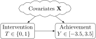

Rows: 10391 Columns: 13
── Column specification ────────────────────────────────────────────────────────
Delimiter: ","
dbl (13): schoolid, intervention, achievement_score, success_expect, ethnici...
ℹ Use `spec()` to retrieve the full column specification for this data.
ℹ Specify the column types or set `show_col_types = FALSE` to quiet this message.
Here the “blob” \(\mathbf{X}\) forms a fork, as drawn…
But in reality the work of modeling is flying into the cloud and modeling the \(\mathbf{X}\)-\(T\) and \(\mathbf{X}\)-\(Y\) relationships (especially: figuring out which covariates \(X_j \in \mathbf{X}\) are colliders), so you can close the backdoors:

This can be really difficult, for a bunch of reasons… What if there was an easier way?
If We Had Control Over Everything (Experiments vs. Observational Data Analysis)
If we could intervene in the DGP, we could assign treatment randomly, thus removing the impact of Covariates on \(T\)!
Alas, we are data scientists, not (necessarily) experiment-conductors, plus there are often ethical reasons to not perform experiments!
…There’s still another approach!
Closing Backdoors the Too-Good-To-Be-True Way
Key insight from causal thinking: Transformation of the problem from “control for all covariates” to “close all backdoor paths”…
For the goal of just closing these paths, we have an alternative1:
Rosenbaum and Rubin (1983): there exists a statistic\(\mathtt{e}(\mathbf{X}) = \Pr(T \mid \mathbf{X})\), the propensity score, which “captures” info in \(\textbf{X}\) relevant to \(T\) such that
Conditioning on \(\mathtt{e}(\mathbf{X})\) closes \(\mathbf{X} \Rightarrow \mathtt{e}(\mathbf{X}) \rightarrow T\) (\(\mathtt{e}(\mathbf{X})\) is a pipe)
This would close backdoor path \(T \leftarrow \mathtt{e}(\mathbf{X}) \Leftarrow \mathbf{X} \rightarrow Y\), leaving only direct effect \(T \rightarrow Y\)! There’s one remaining complication…
Closing Backdoors via Propensity Score Estimation
Sadly we don’t observetrue probability of being treated for all possible values of \(\mathbf{X}\)
But, we can derive an estimate\(\hat{\mathtt{e}}(\mathbf{X})\) using our machine learning skills üòé
We now have that \(\hat{\mathtt{e}}(\mathbf{X})\), as a proxy relative to the pipe\(\mathbf{X} \Rightarrow \mathtt{e}(\mathbf{X}) \rightarrow T\), blocks the pipe to the extent that it captures the true probability \(\mathtt{e}(\mathbf{X}) = \Pr(T \mid \mathbf{X})\)
Closed in proportion to\(\left[ \text{Cor}(\hat{\mathtt{e}}(\mathbf{X}), \mathtt{e}(\mathbf{X})) \right]^2 = ❓\)
Sometimes-Helpful Thought Experiment
Back in our basic confounding scenario:
If there was only one covariate (\(\mathbf{X} = X\)), and it was a constant (\(\Pr(X = c) = 1\)), then all the variation in \(Y\) would be due to variation in \(T\)
Less extreme: if person \(i\) has covariates \(\mathbf{X}_i\) and person \(j\) has covariates \(\mathbf{X}_j\), but \(\mathbf{X}_i = \mathbf{X}_j\), then variation in their outcomes is due solely to \(T\)
Part of the logic of propensity score is that, if person \(i\) has covariates \(\mathbf{X}_i\) and person \(j\) has covariates \(\mathbf{X}_j\), but \(\mathtt{e}(\mathbf{X}_i) = \mathtt{e}(\mathbf{X}_j)\), then \(i\) and \(j\) are perfectly matched
\(\Rightarrow\) (by fun math proof) variation in their outcomes is due solely to \(T\)
How Exactly Do We Adjust For\(\hat{\mathtt{e}}(\mathbf{X})\)?
Rosenbaum, Paul R., and Donald B. Rubin. 1983. “The Central Role of the Propensity Score in Observational Studies for Causal Effects.”Biometrika 70 (1): 41–55. https://doi.org/10.2307/2335942.


{kind=link}